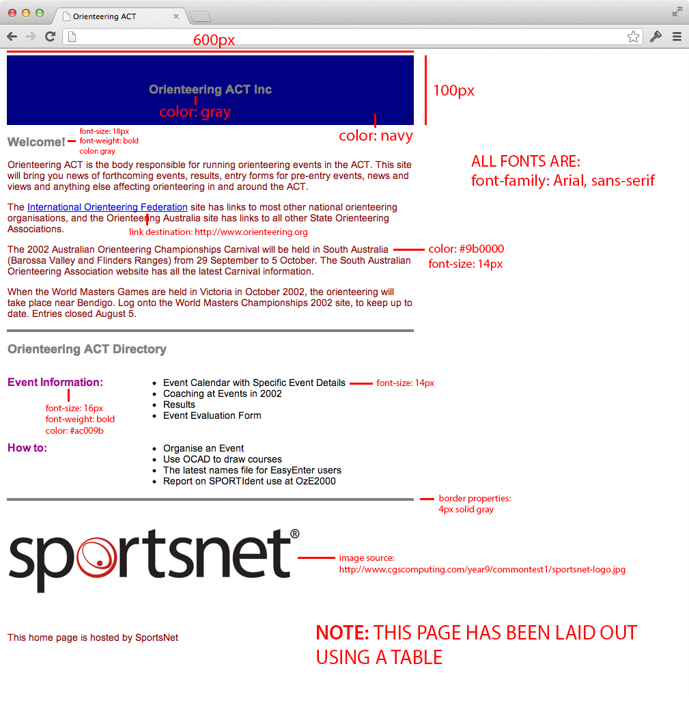

Year 9 Information and Software Technology 2013
Common Test 1: Using HTML and CSS (35%) - Thursday 28 March 2013
Task Description
- Time: You have 45 minutes to complete this task.
- Required: You need to create a web page which EXACTLY replicates the content and layout of the page shown below (which is a screenshot, so you cannot copy and paste anything from this example).
- Validation: Your HTML page must FULLY validate (i.e. with no warnings or errors) as XHTML 1.0 Strict using the W3C validator located at http://validator.w3.org. Your CSS file does not need to validate.
- Template Files: You must use the two template files provided to complete this task. They have been uploaded to your webspace and are named commontest.html and commontest.css accessible in the commontest folder.
- URL: To quickly access your page, copy the following address into your browser replacing 00000 with your student id number:
http://www.cgscomputing.com/00000/commontest/commontest.html - Time Saver: To help you save time, the CSS file has been linked to the HTML file, and the HTML template file validates as XHTML 1.0 Strict.
- Submission: Once you are done there is no need to submit your files - they will be downloaded from your ShiftEdit webspace remotely for marking, immediately following the conclusion of this test.
Page Text
To avoid you having to retype all the text in the page you can find a copy of the web page text below, so that it can be copied and pasted into your own page:
Orienteering ACT Inc Welcome! Orienteering ACT is the body responsible for running orienteering events in the ACT. This site will bring you news of forthcoming events, results, entry forms for pre-entry events, news and views and anything else affecting orienteering in and around the ACT. The International Orienteering Federation site has links to most other national orienteering organisations, and the Orienteering Australia site has links to all other State Orienteering Associations. The 2002 Australian Orienteering Championships Carnival will be held in South Australia (Barossa Valley and Flinders Ranges) from 29 September to 5 October. The South Australian Orienteering Association website has all the latest Carnival information. When the World Masters Games are held in Victoria in October 2002, the orienteering will take place near Bendigo. Log onto the World Masters Championships 2002 site, to keep up to date. Entries closed August 5. Orienteering ACT Directory Event Information: Event Calendar with Specific Event Details Coaching at Events in 2002 Results Event Evaluation Form How to: Organise an Event Use OCAD to draw courses The latest names file for EasyEnter users Report on SPORTIdent use at OzE2000 [-- sportsnet image. source: http://year9.cgscomputing.com/2017/s1commontest/2013s1commontest1/sportsnet-logo.jpg --] This home page is hosted by SportsNet
Annotated Page
An annotated version of the page is provided below giving you with key information so that you can replicate the page.
